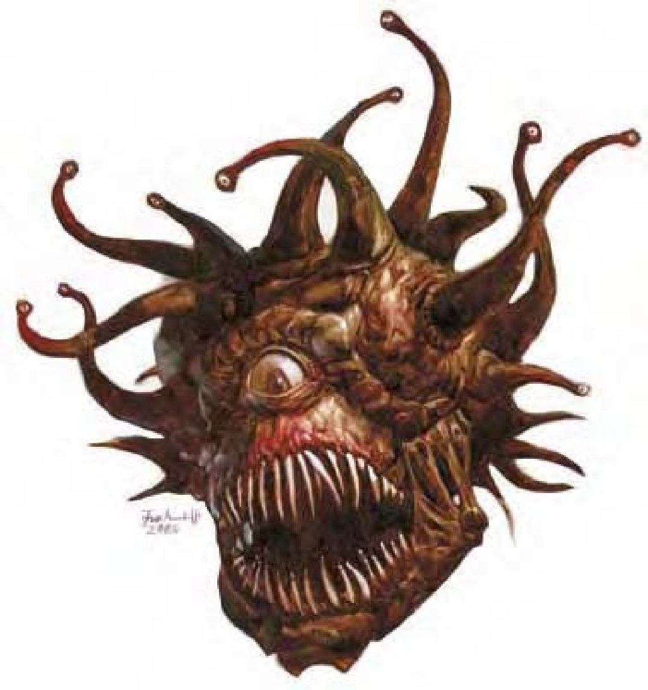

一个球体飘浮于面前，中央是一只眨也不眨的大眼，其血盆大口长满利刃般的尖牙。球体上方伸出许多扭动的细须，末端长着小眼。
眼魔是一场恶梦，又称“多眼球体”、“眼暴君”。极度危险的对手。眼魔通晓自己的语言与通用语。
高斯眼魔又称次级眼魔，是4英尺宽的球体，中央有一只大眼。球体上方伸出六只末端长着小眼的细须。高斯眼魔贪婪而暴虐，会要求比自己弱的生物缴纳供品，并经常为了夺取财宝攻击冒险者。
| 资料栏位 | 高斯眼魔 (Gauth) 中型异怪 |
|---|---|
| 生命骰 | 6d8+18 (45HP) |
| 先攻 | +6 |
| 速度 | 5英尺 (1格)、飞行20英尺 (良好) |
| 防御等级 | 19 (+2敏捷、+7天生)、接触12、措手不及17 |
| 基本攻击/擒抱 | +4 / +3 |
| 攻击 | 眼射线+6远程接触 及 啮咬-2近战 (1d6-1) |
| 全力攻击 | 眼射线+6远程接触 及 啮咬-3近战 (1d6-1) |
| 占据/触及 | 5英尺/5英尺 |
| 特殊攻击 | 眼射线、震摄凝视 |
| 特殊能力 | 全域视野、黑暗视觉60英尺、飞行 |
| 豁免 | 强韧+5、反射+4、意志+9 |
| 属性 | 力量8、敏捷14、体质16、智力15、感知15、魅力13 |
| 技能 | 躲藏+11、神秘知识+11、聆听+4、搜索+15、侦察+17、生存+2 (追踪+4) |
| 专长 | 警觉B、空袭、精通先攻、钢铁意志 |
| 环境 | 寒冷带丘陵 |
| 组织 | 单独、成双或聚集 (3-6) |
| 挑战级数 | 6 |
| 宝藏 | 标准 |
| 阵营 | 通常守序邪恶 |
| 进化 | 7-12HD (中型) ; 13-18HD (大型) |
| 等级修正值 | ― |
眼射线（超自然）：高斯眼魔具有六种与法术效果类似的眼射线，施法者等级8。眼射线距离100英尺，豁免检定DC为14。这六种眼射线分别为：
震摄凝视（超自然）：震摄1轮，30英尺，通过意志检定则无效（DC=14）。豁免DC的调整值与魅力调整值相同。视线接触到高斯眼魔中央大眼的生物即遭受震摄凝视攻击。由于眼射线属于即时动作，高斯眼魔能采用一个标准动作，以震摄凝视集中攻击一个对手，同时并以其他小眼进行眼射线攻击。
| 资料栏位 | 眼魔 (Beholder) 大型异怪 |
|---|---|
| 生命骰 | 11d8+44 (93HP) |
| 先攻 | +6 |
| 速度 | 5英尺 (1格)、飞行20英尺 (良好) |
| 防御等级 | 26 (-1体型、+2敏捷、+15天生)、接触11、措手不及24 |
| 基本攻击/擒抱 | +8 / +12 |
| 攻击 | 眼射线+9远程接触 及 啮咬+7近战 (2d4) |
| 全力攻击 | 眼射线+9远程接触 及 啮咬+2近战 (2d4) |
| 占据/触及 | 10英尺/5英尺 |
| 特殊攻击 | 眼射线 |
| 特殊能力 | 全域视野、防魔法锥、黑暗视觉60英尺、飞行 |
| 豁免 | 强韧+9、反射+5、意志+11 |
| 属性 | 力量10、敏捷14、体质18、智力17、感知15、魅力15 |
| 技能 | 躲藏+12、神秘知识+17、聆听+18、搜索+21、侦察+22、生存+2 (追踪+4) |
| 专长 | 警觉B、空袭、强韧加强、精通先攻、钢铁意志 |
| 环境 | 寒冷带丘陵 |
| 组织 | 单独、成双或聚集 (3-6) |
| 挑战级数 | 13 |
| 宝藏 | 双倍标准 |
| 阵营 | 通常守序邪恶 |
| 进化 | 12-16HD (大型) ; 17-33HD (超大型) |
| 等级修正值 | ― |
眼射线（超自然）：眼魔具有十种与法术效果类似的眼射线，施法者等级13。眼射线距离150英尺，豁免检定DC为17。这十种眼射线分别为：
战斗：即使未被激怒，眼魔通常也会进行攻击。其物理攻击并不强，但眼魔会穿越至对手群中心，大量使用眼射线。接近敌人时，眼魔会尽力让对方混乱迷惑。
防魔法锥（超自然）：眼魔的中央大眼持续发出150英尺的防魔法锥。效果与同名法术相同（施法者等级13）。锥状范围内所有魔法与超自然能力与效果均受压抑（眼魔自己的眼射线也一样）。每轮一次，眼魔可于自己的回合决定是否启动本能力（不启动时，中央大眼即闭合）。
全域视野（特异）：眼魔特别机警慎重，众多的眼睛使他们在进行“侦察”和“搜索”检定时具有+4种族加值，同时也不会被夹击。
飞行（特异）：眼魔的身体天生就具有浮力，能使他以20英尺速度飞行。浮力同时也会产生“羽落术”效果，持续时间为“永久”，距离为“个人”。
眼魔是可恨、具侵略性、贪婪的生物。即便在可避免的状态下，眼魔也会选择攻击或支配其他生物。他们极度排外，厌恶所有不像自己的生物。
眼魔有许多亚种：有些外表以角质硬壳包覆，有些平滑；有些长着小眼的细须为蛇形，有些则为似甲壳类的关节。诸如此类从躯体颜色到中央大眼尺寸的微小不同都可以让两群眼魔水火不容。每个眼魔都宣称自己亚种是“理想的完美眼魔”，其他则是丑陋的复制品，必须加以消灭。
眼魔经常以解离射线凿出地底巢穴。其巢穴注重垂直结构，有许多平行通道，通道顶端互有房间。眼魔倾向于陆行生物难以靠近的地点建造巢穴。